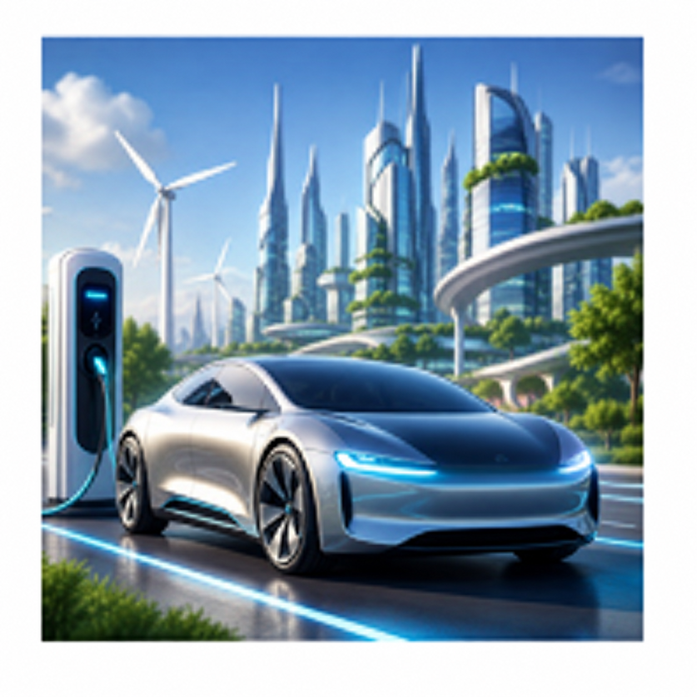
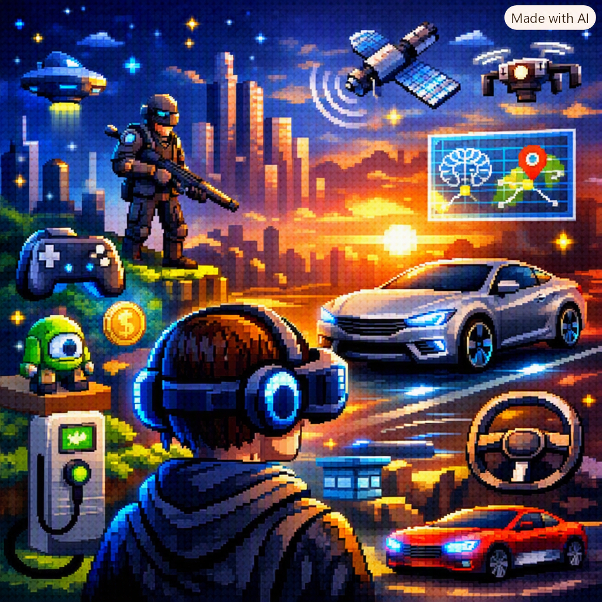

Meu primeiro post
Por: Henry Pietro
Bem vindos ao meu blog de games e evolução automotiva.
Vou compartilhar sobre games e evolução automotiva
Meu primeiro post
Por: Henry Pietro
Bem vindos ao meu blog de games e evolução automotiva.

Toda evolução de jogos e tecnologia automotiva
Por: Henry Pietro
top 3 melhores jogos de videogame:

Conversores RetroTINK
Por: Rodrigo Mendes
A linha de produtos RetroTINK consiste em scalers, conversores e cabos RGB sem atraso, criados pelo desenvolvedor Mike Chi, e que abrangem todas as faixas de preço. Todos são dispositivos totalmente plug and play, sem necessidade de ajustes... embora ofereçam opções incríveis para quem quer extrair o máximo desempenho de seus consoles clássicos!
Por: Rodrigo Mendes
Apesar de oferecer experiências gráficas e cinemáticas, jogos modernos deixam a desejar em duração em gameplays, checkpoints contínuos e histórias recicladas ou reaproveitadas de obras de cinema

Jogos de Plataformas
Por: Rodrigo Mendes
é um jogo eletrônico visto de perfil onde a câmera se move horizontalmente conforme o personagem caminha, pula e corre pelos cenários. Exemplos são Super Mario Bro, Sonic e Donkey Kong Country

Metroidvania
Por: Rodrigo Mendes
Metroidvania é um subgênero de jogos eletrônicos focado na exploração não linear de um grande mapa interconectado e na progressão guiada por habilidades. Exemplos são Super Metroid e Castlevania - Symphony of the Night